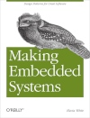

Gašpar Dončević
Embedded systems engineer specialized in biomedical engineering
I'm an embedded systems engineer from Croatia and specialise in embedded systems. I got my electrical enigneering masters degree in the summer of 2024. I specialized in electrical and computer engineering with sprinkled in classes of biomedical engineering. That means that I've seen almost most of it all, from sensor design, instrumentation, filter design, PCB design, embedded systems programing, Digital signal processing to a bit about anatomy and human locomotion.
Specialised in
- embedded systems design
- pcb design
- biomedical engineering

You can find my CV here. My CV in my native language is also here.
What do I even do?
I really like researching uncommon solutions to problems regarding hardware limitations, pushing the limits of hardware
and like any good lemon, squeezing the hell out of it.
My masters thesis, titled Designing a new generation system for High Density surface Electromyography,
is a wireless system for measuring muscle activity with a large electorode array. The modular system was designed to adapt to different sizes of electrode grids.
It's currently in the early testing phase and I intend on continuing the systems development.
My favourite books that helped me a lot in developing as an engineer
| book cover | book title | book author |
|---|---|---|
| Hands-On FreeRTOS with Microcontrolers | Brian Amos | |
|  | Making Embedded Systems | Elecia White |
| Understanding Digital Signal Processing | Richard G. Lyons | |
 |
Signal and power integrity simplified | Eric Bogatin |
Designed by me.